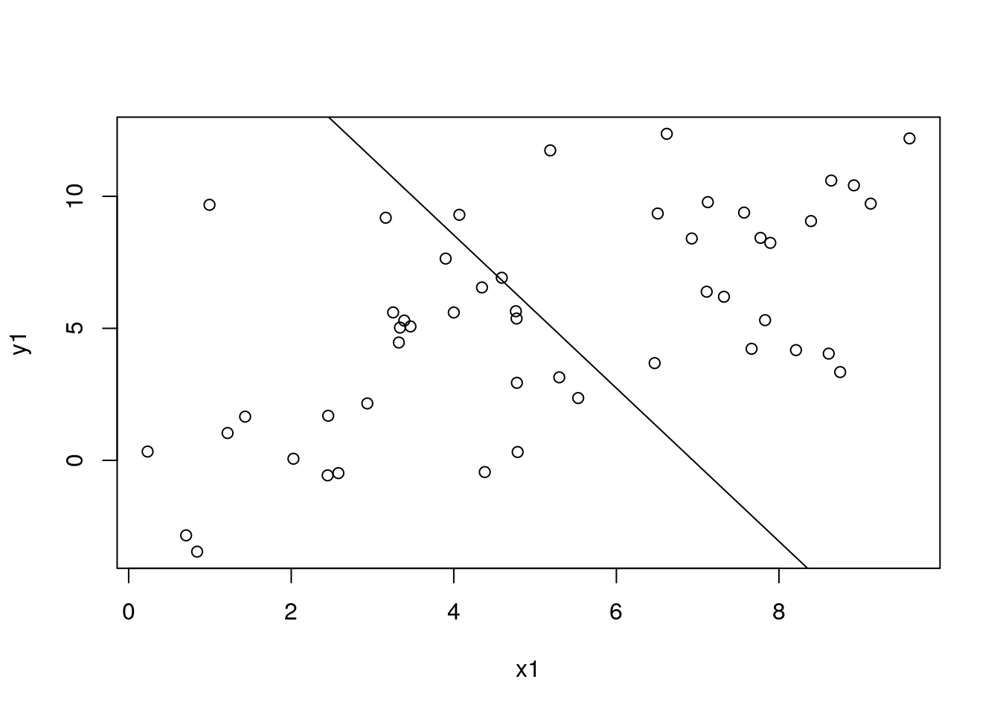

Chapter 3 MR-BRT
3.1 Prepare simulated data
library(dplyr)
library(mrbrt002, lib.loc = path_to_r_version4_packages)
set.seed(1)
k_studies <- 10
n_per_study <- 5
# k_studies <- 40
# n_per_study <- 40
tau_1 <- 4
sigma_1 <- 1
tau_2 <- 0.6
sigma_2 <- 0.2
df_sim_study <- data.frame(study_id = as.factor(1:k_studies)) %>%
mutate(
study_effect1 = rnorm(n = k_studies, mean = 0, sd = tau_1),
study_effect2 = rnorm(n = k_studies, mean = 0, sd = tau_2)
# study_colors = brewer.pal(n = k_studies, "Spectral")
)
df_sim1 <- do.call("rbind", lapply(1:nrow(df_sim_study), function(i) {
df_sim_study[rep(i, n_per_study), ] })) %>%
mutate(
x1 = runif(n = nrow(.), min = 0, max = 10),
y1 = 0.9*x1 + study_effect1 + rnorm(nrow(.), mean = 0, sd = sigma_1),
y1_se = sigma_1,
y2_true = 2 * sin(0.43*x1-2.9),
y2 = y2_true - min(y2_true) + study_effect2 + rnorm(nrow(.), mean = 0, sd = sigma_2),
y2_se = sigma_2,
is_outlier = FALSE) %>%
arrange(x1)
df_sim2 <- df_sim1 %>%
rbind(., .[(nrow(.)-7):(nrow(.)-4), ] %>% mutate(y1=y1-18, y2=y2-4, is_outlier = TRUE))
# function for plotting uncertainty intervals
add_ui <- function(dat, x_var, lo_var, hi_var, color = "darkblue", opacity = 0.2) {
polygon(
x = c(dat[, x_var], rev(dat[, x_var])),
y = c(dat[, lo_var], rev(dat[, hi_var])),
col = adjustcolor(col = color, alpha.f = opacity), border = FALSE
)
}3.2 Fitting a standard mixed effects model
dat1 <- MRData()
dat1$load_df(
data = df_sim1, col_obs = "y1", col_obs_se = "y1_se",
col_covs = list("x1"), col_study_id = "study_id" )
mod1 <- MRBRT(
data = dat1,
cov_models = list(
LinearCovModel("intercept", use_re = TRUE),
LinearCovModel("x1") ) )
mod1$fit_model(inner_print_level = 5L, inner_max_iter = 1000L)
df_pred1 <- data.frame(x1 = seq(0, 10, by = 0.1))
dat_pred1 <- MRData()
dat_pred1$load_df(
data = df_pred1,
col_covs=list('x1')
)To save a model object, use the py_save_object() function. To load a saved model object, use py_load_object.
# py_save_object(object = mod1, filename = file.path(path_to_misc_outputs, "mod1.pkl"), pickle = "dill")
# mod1 <- py_load_object(filename = file.path(path_to_misc_outputs, "mod1.pkl"), pickle = "dill")3.2.1 – Point prediction only
If you don’t need uncertainty estimates, this option is the fastest.
df_pred1$pred0 <- mod1$predict(data = dat_pred1)
with(df_sim1, plot(x1, y1))
with(df_pred1, lines(x1, pred0))### – Uncertainty from fixed effects only (using asymptotic statistics) {#section1_2}
If we can assume that the posterior distributions of the parameters are Gaussian (i.e. no hard constraints specified in the model), we can obtain samples from the fixed effects using a fast algorithm.
n_samples1 <- 1000L
samples1 <- core$other_sampling$sample_simple_lme_beta(
sample_size = n_samples1,
model = mod1
)
draws1 <- mod1$create_draws(
data = dat_pred1,
beta_samples = samples1,
gamma_samples = matrix(rep(0, n_samples1), ncol = 1),
random_study = FALSE )
df_pred1$pred1 <- mod1$predict(data = dat_pred1)
df_pred1$pred1_lo <- apply(draws1, 1, function(x) quantile(x, 0.025))
df_pred1$pred1_hi <- apply(draws1, 1, function(x) quantile(x, 0.975))
with(df_sim1, plot(x1, y1))
with(df_pred1, lines(x1, pred1))
add_ui(df_pred1, "x1", "pred1_lo", "pred1_hi")3.2.2 – Uncertainty from fixed effects only (using fit-refit)
We use the fit-refit method for obtaining samples from the parameters when there are uniform priors (a.k.a. constraints) specified in the model, which can make the posterior distributions of parameters not Gaussian. This code using mod1$sample_soln gives the same result as above.
n_samples2 <- 1000L
samples2_fitrefit <- mod1$sample_soln(sample_size = n_samples2)
draws2_fitrefit <- mod1$create_draws(
data = dat_pred1,
beta_samples = samples2_fitrefit[[1]],
gamma_samples = samples2_fitrefit[[2]],
random_study = FALSE )
df_pred1$pred2 <- mod1$predict(data = dat_pred1)
df_pred1$pred2_lo <- apply(draws2_fitrefit, 1, function(x) quantile(x, 0.025))
df_pred1$pred2_hi <- apply(draws2_fitrefit, 1, function(x) quantile(x, 0.975))
with(df_sim1, plot(x1, y1))
with(df_pred1, lines(x1, pred2))
add_ui(df_pred1, "x1", "pred2_lo", "pred2_hi")3.2.3 – Uncertainty from fixed effects and between-study heterogeneity
When we require samples of gamma (uncertainty in the parameter that estimates between-study heterogeneity), we need to use the sample_soln approach.
n_samples3 <- 1000L
samples3 <- mod1$sample_soln(sample_size = n_samples3)
draws3 <- mod1$create_draws(
data = dat_pred1,
beta_samples = samples3[[1]],
gamma_samples = samples3[[2]],
random_study = TRUE )
# if a single value of gamma is sufficient (not sampling from the uncertainty of gamma),
# you can pass in the point estimate for gamma like this:
#
# draws3 <- mod1$create_draws(
# data = dat_pred1,
# beta_samples = samples3[[1]],
# gamma_samples = matrix(rep(mod1$gamma_soln, n_samples3), ncol = 1),
# random_study = TRUE )
df_pred1$pred3 <- mod1$predict(dat_pred1)
df_pred1$pred3_lo <- apply(draws3, 1, function(x) quantile(x, 0.025))
df_pred1$pred3_hi <- apply(draws3, 1, function(x) quantile(x, 0.975))
with(df_sim1, plot(x1, y1))
with(df_pred1, lines(x1, pred3))
add_ui(df_pred1, "x1", "pred3_lo", "pred3_hi")3.2.4 – Predicting out on the random effects
To incorporate the estimated random effects into point predictions, specify col_study_id in the data object you pass to the predict() function, and set predict_for_study = TRUE and sort_by_data_id = TRUE in the predict() function.
Important! If sort_by_data_id = TRUE is not specified, the predictions might not line up with the rows of the prediction data frame.
# 1. convert prediction frame into a MRData() object
# 2. extract the (potentially) sorted data frame with the to_df() function
# 3. add the predictions to this new data frame
dat_sim1_tmp <- MRData()
dat_sim1_tmp$load_df(data = df_sim1, col_covs = list("x1"), col_study_id = "study_id")
df_sim1$pred_re <- mod1$predict(
data = dat_sim1_tmp,
predict_for_study = TRUE,
sort_by_data_id = TRUE
)
with(df_sim1, plot(x1, y1))
for (id in unique(df_sim1$study_id)) {
with(filter(df_sim1, study_id == id), lines(x1, y1, lty = 2))
}
with(df_sim1, plot(x1, y1))
for (id in unique(df_sim1$study_id)) {
# id <- 4 # dev
df_tmp <- filter(arrange(df_sim1, x1), study_id == id)
with(df_tmp, lines(x1, pred_re, lty = 1))
}# to get the random effects by group...
re <- mod1$re_soln
df_re <- data.frame(level = names(mod1$re_soln), re = unlist(mod1$re_soln))
# with(df_sim1, plot(x1, y1))3.3 Priors
3.3.0.1 - Setting a prior on gamma
mod3 <- MRBRT(
data = dat1,
cov_models = list(
LinearCovModel("intercept", use_re = TRUE, prior_gamma_gaussian = array(c(0, 0.02))),
LinearCovModel("x1") ) )
mod3$fit_model(inner_print_level = 5L, inner_max_iter = 1000L)
dat_sim1_tmp <- MRData()
dat_sim1_tmp$load_df(data = df_sim1, col_covs = list("x1"), col_study_id = "study_id")
df_sim1$pred_re_prior <- mod3$predict(data = dat_sim1_tmp, predict_for_study = TRUE, sort_by_data_id = TRUE)
with(df_sim1, plot(x1, y1))
for (id in unique(df_sim1$study_id)) {
df_tmp <- filter(arrange(df_sim1, x1), study_id == id)
with(df_tmp, lines(x1, pred_re_prior, lty = 1))
}
3.3.1 - Setting a prior on beta
With great power comes great responsibility…
mod4 <- MRBRT(
data = dat1,
cov_models = list(
LinearCovModel("intercept", use_re = TRUE),
LinearCovModel("x1", prior_beta_uniform = array(c(-3.1, -2.9))) ) )
mod4$fit_model(inner_print_level = 5L, inner_max_iter = 1000L)
df_pred1$pred4 <- mod4$predict(data = dat_pred1)
with(df_sim1, plot(x1, y1))
with(df_pred1, lines(x1, pred4))
3.4 Removing the effects of outliers with trimming
dat2 <- MRData()
dat2$load_df(
data = df_sim2, col_obs = "y1", col_obs_se = "y1_se",
col_covs = list("x1"), col_study_id = "study_id" )
df_pred2 <- data.frame(x1 = seq(0, 10, by = 2))
dat_pred2 <- MRData()
dat_pred2$load_df(
data = df_pred2,
col_covs=list('x1')
)mod2 <- MRBRT(
data = dat2,
cov_models = list(
LinearCovModel("intercept", use_re = TRUE),
LinearCovModel("x1") ),
inlier_pct = 0.9)
mod2$fit_model(inner_print_level = 5L, inner_max_iter = 1000L)
df_pred2$pred4 <- mod2$predict(data = dat_pred2)
# get a data frame with estimated weights
df_mod2 <- cbind(mod2$data$to_df(), data.frame(w = mod2$w_soln))
with(df_mod2, plot(
x = x1, y = obs,
col = ifelse(w == 1, "black", "red"),
pch = ifelse(w == 1, 1, 16)
))
with(df_pred2, lines(x1, pred4))3.5 Splines
3.5.1 - Setting priors and shape constraints on splines
spline_l_linearandspline_r_linearmake the left and right tail segments linear, respectivelyprior_spline_monotonicityforces the spline to be “increasing” or “decreasing”prior_spline_convexitymakes the spline “convex” or “concave”prior_spline_maxder_gaussian = array(c(0, 0.03))has the effect of putting a dampening prior on the spline, making the highest-order derivative of each segment subject to a \(N(0, 0.03^2)\) Gaussian prior. This makes a cubic spline more quadratic, quadratic more linear, etc.When
spline_l_linearandspline_r_linearare set toTRUE, the value given toprior_spline_maxder_gaussianfor those segments is a direct prior on the slope of the segment. For example,prior_spline_maxder_gaussian = rbind(c(0,0,0,0,-1), c(Inf,Inf,Inf,Inf,0.0001))makes the slope of the right tail very close to-1whenspline_r_linear = TRUE. Note that the function takes a matrix as an input, where the first row is a vector a prior means and the second row is a vector of prior standard deviations. The number of columns must match the number of knots minus 1.
dat3 <- MRData()
dat3$load_df(
data = df_sim1, col_obs = "y2", col_obs_se = "y2_se",
col_covs = list("x1"), col_study_id = "study_id" )
mod5 <- MRBRT(
data = dat3,
cov_models = list(
LinearCovModel("intercept", use_re = TRUE),
LinearCovModel(
alt_cov = "x1",
use_spline = TRUE,
# spline_knots = array(c(0, 0.25, 0.5, 0.75, 1)),
spline_knots = array(seq(0, 1, by = 0.2)),
spline_degree = 2L,
spline_knots_type = 'domain',
spline_r_linear = TRUE,
spline_l_linear = FALSE
# prior_spline_monotonicity = 'increasing'
# prior_spline_convexity = "convex"
# prior_spline_maxder_gaussian = array(c(0, 0.01))
# prior_spline_maxder_gaussian = rbind(c(0,0,0,0,-1), c(Inf,Inf,Inf,Inf,0.0001))
)
)
)
mod5$fit_model(inner_print_level = 5L, inner_max_iter = 1000L)
df_pred3 <- data.frame(x1 = seq(0, 10, by = 0.1))
dat_pred3 <- MRData()
dat_pred3$load_df(
data = df_pred3,
col_covs=list('x1')
)
df_pred3$pred5 <- mod5$predict(data = dat_pred3)
with(df_sim1, plot(x1, y2))
with(df_pred3, lines(x1, pred5))
# # visualize knot locations
for (k in mod5$cov_models[[2]]$spline_knots) abline(v = k, col = "gray")3.5.2 - Ensemble splines
See this link about arguments for the sample_knots() function (or do py_help(utils$sample_knots) in an interactive session): https://github.com/ihmeuw-msca/mrtool/blob/740f605264732f0faa604614a987fc38c7d88f83/src/mrtool/core/utils.py#L293.
dat4 <- MRData()
dat4$load_df(
data = df_sim1, col_obs = "y2", col_obs_se = "y2_se",
col_covs = list("x1"), col_study_id = "study_id" )
knots_samples <- utils$sample_knots(
num_intervals = 3L,
knot_bounds = rbind(c(0.0, 0.4), c(0.6, 1.0)),
num_samples = 20L
)
ensemble_cov_model1 <- LinearCovModel(
alt_cov = "x1",
use_spline = TRUE,
spline_knots = array(c(0, 0.33, 0.66, 1)),
spline_degree = 3L,
spline_knots_type = 'frequency'
)
mod5a <- MRBeRT(
data = dat3,
ensemble_cov_model = ensemble_cov_model1,
ensemble_knots = knots_samples,
cov_models = list(
LinearCovModel("intercept", use_re = TRUE)
)
)
mod5a$fit_model(inner_print_level = 5L, inner_max_iter = 1000L)
df_pred3 <- data.frame(x1 = seq(0, 10, by = 0.1))
dat_pred3 <- MRData()
dat_pred3$load_df(
data = df_pred3,
col_covs=list('x1')
)
# this predicts a weighted average from the spline ensemble
df_pred3$pred5a <- mod5a$predict(data = dat_pred3)
with(df_sim1, plot(x1, y2))
with(df_pred3, lines(x1, pred5a))# # view all splines in the ensemble
#
# pred5a <- mod5a$predict(data = dat_pred3, return_avg = FALSE)
#
# with(df_sim1, plot(x1, y2))
# for (i in 1:nrow(pred5a)) {
# tmp <- pred5a[i, ]
# with(df_pred3, lines(x1, tmp))
# }3.6 The ratio model
This model is useful when a covariate is represented as a range. For example, often population-level data are indexed by age group. We can represent this in the model as alt_cov = c("age_start", "age_end"). Or if a relative risk estimate corresponds to a comparison of two BMI ranges, we specify the model as alt_cov = c("b_0", "b_1") and ref_cov = c("a_0", "a_1"). When predicting out, we need to set a constant reference level and varying alternative level.
For LogCovModel, our regression model can be represented as
\(y = ln(1 + X_{alt}\beta) - ln(1 + X_{ref}\beta)\),
where \(X_{alt}\) and \(X_{ref}\) are the design matrix for the alternative and reference groups. They could be either covariates or the spline design matrices from the covariates.
When we want to include the random effects, we always assume a random “slope,”
\(y = (\frac{ln(1 + X_{alt}\beta) - ln(1 + X_{ref}\beta)}{X_{alt}-X_{ref}} + u)(X_{alt}-X_{ref})\)
Ratio models do not need an intercept specified, as we are considering relative risk where measurement is invariant with the scaling of the curve.
In the ratio model, if we set use_re=TRUE, we automatically turn on the use_re_mid_point, since for log relative risk, we always consider the random effects as the random average slope.
We use spline to parameterize the relative risk curve in the linear space, and all the shape constraints are in linear space.
# creating simulated data with exposure ranges
set.seed(1)
df_sim3 <- do.call("rbind", lapply(1:nrow(df_sim1), function(i) {
# i <- 1 # dev
x_offset <- 0.1
row_j <- sample(1:nrow(df_sim1), 1)
df_i <- df_sim1[i, ]
df_j <- df_sim1[row_j, ]
df_k <- data.frame(
row_i = i,
row_j = row_j,
a_0 = df_i$x1 - x_offset, a_1 = df_i$x1 + x_offset,
b_0 = df_j$x1 - x_offset, b_1 = df_j$x1 + x_offset,
log_rr = df_j$y2 - df_i$y2,
log_rr_se = 1
)
return(df_k)
}))
head(df_sim3)
dat1 <- MRData()
dat1$load_df(
data = df_sim3, col_obs = "log_rr", col_obs_se = "log_rr_se",
col_covs = list("a_0", "a_1", "b_0", "b_1") )
mod6 <- MRBRT(
data = dat1,
cov_models = list(
LogCovModel(
alt_cov = c("b_0", "b_1"),
ref_cov = c("a_0", "a_1"),
use_re = TRUE,
use_spline = TRUE,
# spline_knots = array(seq(0, 1, by = 0.2)),
spline_knots = array(c(0, 0.25, 0.5, 0.75, 1)),
spline_degree = 3L,
spline_knots_type = 'frequency',
name = "exposure"
)
)
)
mod6$fit_model(inner_print_level = 5L, inner_max_iter = 1000L)
# df_pred6 <- data.frame(exposure = seq(0, 10, by = 2), study_id = "4")
df_pred6 <- data.frame(
b_0 = seq(0, 10, by = 0.1),
b_1 = seq(0, 10, by = 0.1) ) %>%
mutate(a_0 = 0, a_1 = 0 )
dat_pred6 <- MRData()
dat_pred6$load_df(
data = df_pred6,
col_covs=list('a_0', 'a_1', 'b_0', 'b_1')
# col_covs=list("exposure")
)
pred6 <- mod6$predict(dat_pred6)
with(df_sim3, plot(b_0, log_rr))
with(df_pred6, lines(b_0, pred6))3.7 Automated covariate selection
# create simulated data
set.seed(123)
beta <- c(0, 0, 0, 1.2, 0, 1.5, 0)
gamma <- rep(0, 7)
num_obs <- 100
obs_se = 0.1
studies <- c("A", "B", "C")
covs <- cbind(
rep(1, num_obs),
do.call("cbind", lapply(1:(length(beta)-1), function(i) rnorm(num_obs)))
)
obs <- covs %*% beta + rnorm(n = num_obs, mean = 0, sd = obs_se)
df_sim4 <- as.data.frame(do.call("cbind", list(obs, rep(obs_se, num_obs), covs))) %>%
select(-V3)
cov_names <- paste0("cov", 1:(length(beta)-1))
names(df_sim4) <- c("obs", "obs_se", cov_names)
df_sim4$study_id <- sample(studies, num_obs, replace = TRUE)
mrdata <- MRData()
mrdata$load_df(
data = df_sim4,
col_obs = 'obs',
col_obs_se = 'obs_se',
col_study_id = 'study_id',
col_covs = as.list(cov_names)
)
candidate_covs <- cov_names[!cov_names == "cov1"]
covfinder <- CovFinder(
data = mrdata,
covs = as.list(candidate_covs),
pre_selected_covs = list("cov1"),
normalized_covs = FALSE,
num_samples = 1000L,
power_range = list(-4, 4),
power_step_size = 1,
laplace_threshold = 1e-5
)
covfinder$select_covs(verbose = TRUE)
covfinder$selected_covs## [1] "cov1" "cov3" "cov5"3.8 Calculating an evidence score
For documentation on the Scorelator function, see py_help(evidence_score$Scorelator) or go to https://github.com/ihmeuw-msca/MRTool/blob/5078ded1f22a99fd733ffd15de258cc407a8f4fd/src/mrtool/evidence_score/scorelator.py.
The code below creates a dataset for simulating the effect of a dichotomous risk factor, fits a MR-BRT model on it, and calculates an evidence score. Note that continuous risk factors will want to specify score_type = "area" in the evidence_score$Scorelator() function.
# get simulated data, run model and get draws
# for passing to the Scorelator function
df_sim7_in <- read.csv("example_data/linear_sim_evidence_score_0_0.5.csv")
cutoff = round(quantile(df_sim7_in$b_1, probs = 0.3), 2)
df_sim7 <- df_sim7_in %>%
mutate(
a_mid = (a_0 + a_1) / 2,
b_mid = (b_0 + b_1) / 2,
ref = ifelse(a_mid <= cutoff, 0, 1),
alt = ifelse(b_mid <= cutoff, 0, 1) ) %>%
filter(ref == 0 & alt == 1)
dat_sim7 <- MRData()
dat_sim7$load_df(
data = df_sim7,
col_obs = "rr_log",
col_obs_se = "rr_log_se",
col_covs = list("ref", "alt"),
col_study_id = "study_id"
)
cov_models7 <- list(
LinearCovModel(
alt_cov = "intercept",
use_re = TRUE,
prior_beta_uniform = array(c(0.0, Inf))
)
)
mod7 <- MRBRT(
data = dat_sim7,
cov_models = cov_models7
)
mod7$fit_model(inner_max_iter = 1000L, inner_print_level = 5L)
df_pred7 <- data.frame(intercept = 1, ref = 0, alt = 1)
dat_pred7 <- MRData()
dat_pred7$load_df(data = df_pred7, col_covs = list("ref", "alt"))
samples7 <- mod7$sample_soln(sample_size = 1000L)
beta_samples7 <- samples7[[1]]
gamma_samples7 <- samples7[[2]]
y_draws7 <- mod7$create_draws(
data = dat_pred7,
beta_samples = beta_samples7,
gamma_samples = gamma_samples7,
random_study = TRUE
)# using the scorelator
# need to run 'repl_python()' to open an interactive Python interpreter,
# then immediately type 'exit' to get back to the R interpreter
# -- this helps to load a required Python package
repl_python()
# -- type 'exit' or hit escape
evidence_score <- import("mrtool.evidence_score.scorelator")
scorelator7 <- evidence_score$Scorelator(
ln_rr_draws = t(y_draws7),
exposures = array(1),
score_type = "point"
)
score <- scorelator7$get_evidence_score(path_to_diagnostic=file.path(path_to_misc_outputs, "tmp_score.pdf"))3.9 Frequently asked questions
- How do I access the help documentation?
In an interactive R session, type py_help(...) where ... is the name of the function. This will show the Python docstring with information about required/optional arguments and a description of what they mean.
- Where should I go with questions?
The #friends_of_mr_brt Slack channel is a good place to start for troubleshooting questions. It’s maintained by the Mathematical Sciences and Computational Algorithms (MSCA) team. If something requires a more in-depth discussion, feel free to sign up for a slot at office hours (#mscm-office-hours Slack channel).
- What does MR-BRT stand for?
Meta-regression with Bayesian priors, Regularization and Trimming